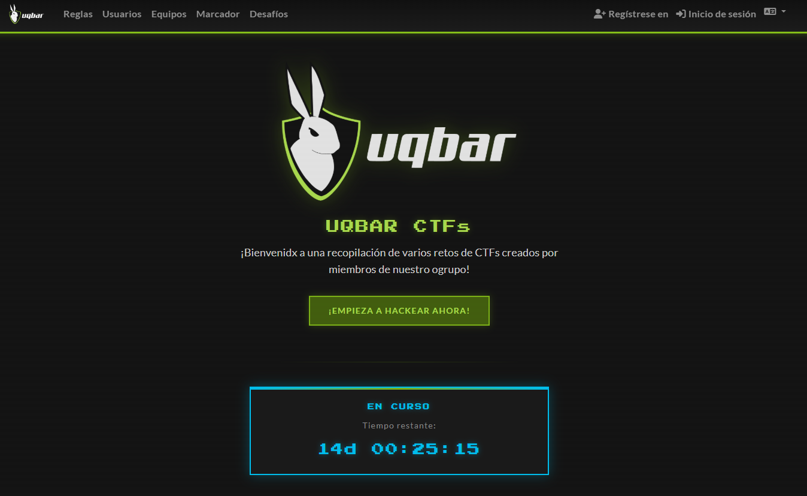
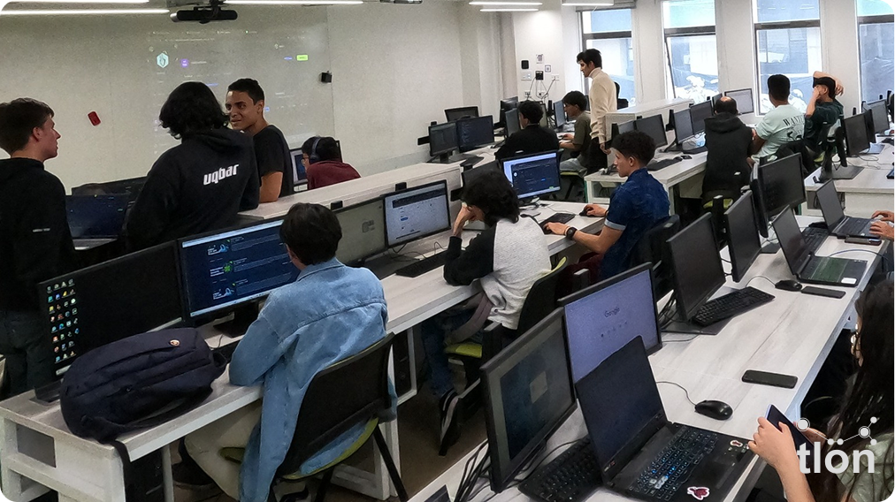
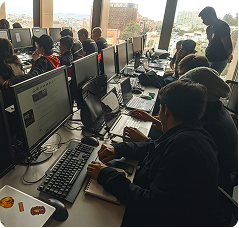
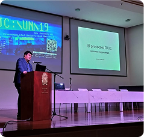
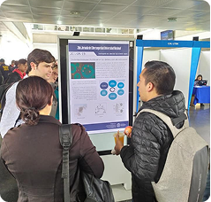
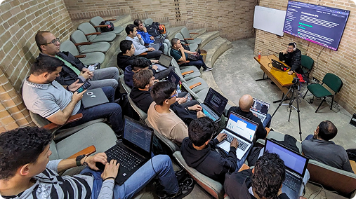
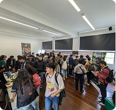
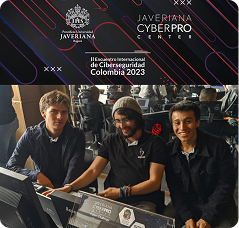
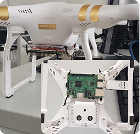
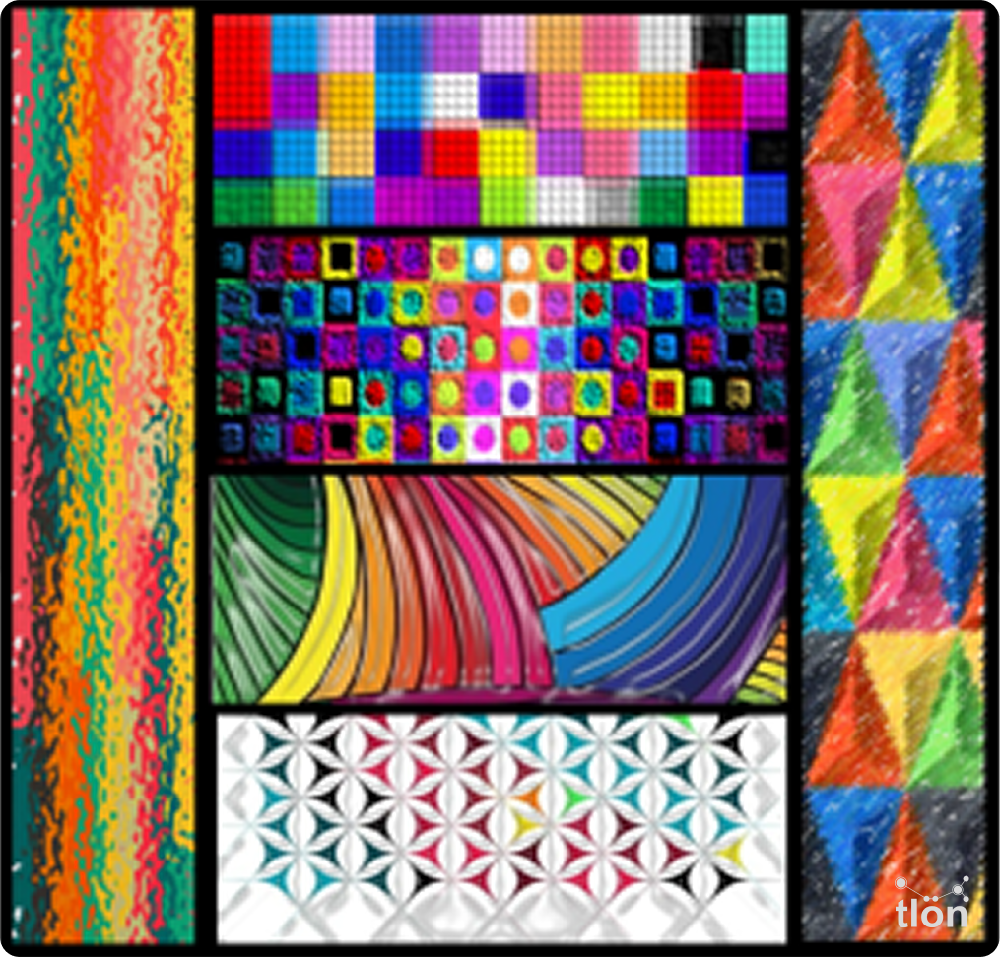

- Inicio
-
¿Quiénes somos?
-
Proyecto TLÖÑ
-
Actividades
- Producción Intelectual


El Grupo de Investigación TLÖN se dedica al estudio y desarrollo de soluciones que permiten la integración e intercambio de información en entornos distribuidos y heterogéneos.
Nuestra meta es abordar los retos que surgen con las tecnologías emergentes y proponer arquitecturas que respondan a las demandas de escalabilidad, interoperabilidad y eficiencia.

Laboratorio de pentesting sobre Windows, analizando la versión de mayor demanda, las principales vulnerabilidades y los conceptos necesarios.

Conferencia realizada por nuestro docente Oscar Agudelo sobre la sinergia entre Teoría de Categorías y Seguridad de la Información.

En la JCUN 2025 conocimos sobre diversos trabajos de investigación relacionados con la seguridad informática.
Nuestras líneas de investigación abordan temas clave como sistemas distribuidos, redes, y ciberseguridad, con el objetivo de contribuir al avance tecnológico del país.
Desde TLÖN, conectamos teoría y práctica, formando talento humano y desarrollando proyectos que responden a los desafíos actuales en el manejo de información distribuida.

La tambien conocida como primi-feria es el espacio donde los semilleros de investigacion de la Facultad de Ingenieria muestran sus avances.

Nuestros investigadores participaron en la jornada de ciberseguridad organizada por la Universidad Javeriana en 2023.

Nuestro estudiante de pregrado presenta su proyecto de tesis enfocado en redes ad hoc en desiertos digitales.

"El mundo de Tlön no es un mundo de objetos sino de actos. No hay sustantivos, hay verbos impersonales
calificados por monosílabos adverbiales. Por ejemplo, no hay palabra que corresponda a la palabra luna, pero
hay un verbo que sería lunecer o lunear."
- Jorge Luis Borges, Ficciones
Creemos en que imaginar un sistema es ya comenzar a transformarlo. Nuestro modelo computacional no solo describe mundos posibles, sino que propone nuevas formas de habitarlos tecnológicamente.
Este modelo busca simular y optimizar entornos reales de intercambio de información, incorporando principios de escalabilidad, resiliencia y eficiencia.
